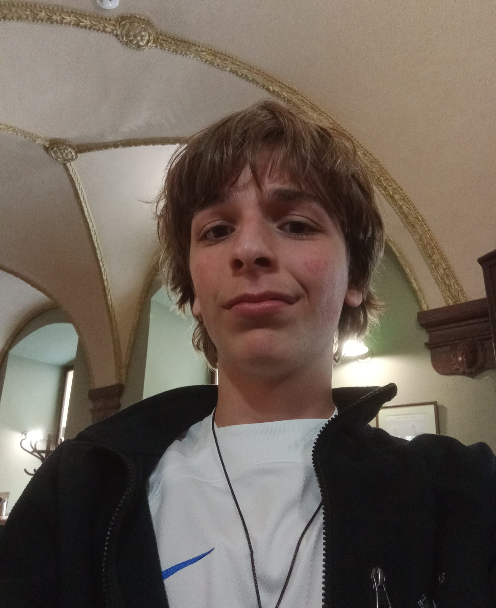
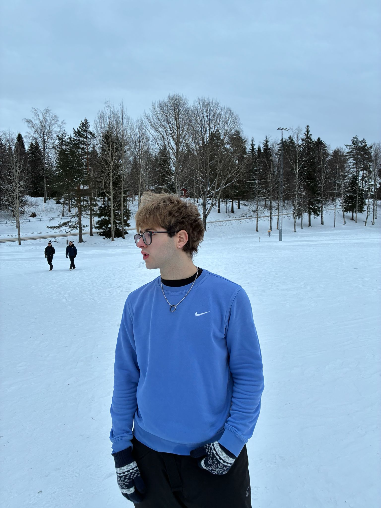
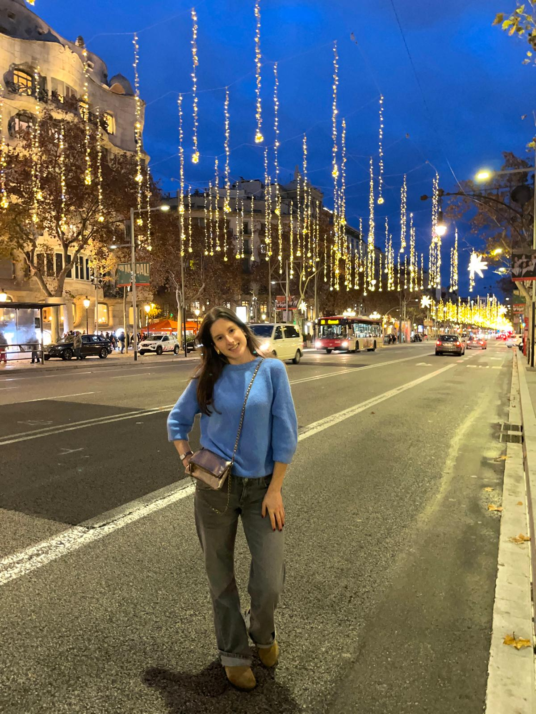
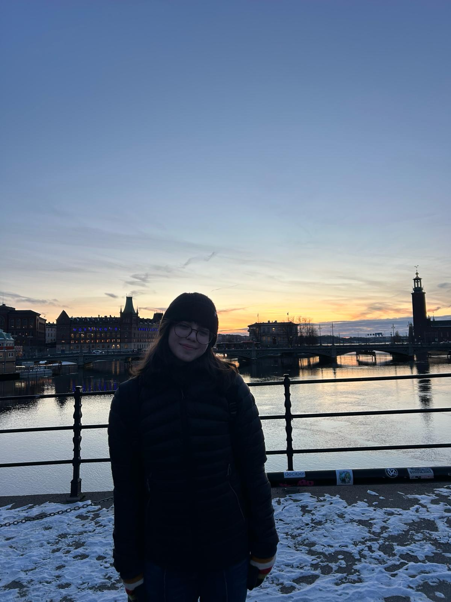

Coneix l'equip ITER Plèiades!
.jpg)
Tim Björnstad Poses
Responsable de programar tots els sensors del nostre satèl·lit, ha sigut l'encarregat de dur a terme aquesta tasca pel seu gran interès en el món de la robòtica i la programació, juntament amb L'Armand Bonjkiemizz han fet que el nostre satèl·lit sigui possible.

Armand Bonjkiemizz Codern
Responsable de programar tots els sensors del nostre satèl·lit juntament amb el Tim Björnstand. L'Armand és un noi que cursa l'optativa de robòtica, també té una estima en el món de la robòtica i la programació, això ha portat una gran lleugeresa en crear el nostre satèl·lit.

Bruno Martín Toro
Encarregat de produir el nostre paracaigudes, en Bruno Martin té amplis coneixements sobre costura gràcies a passar temps amb les seves àvies, és un noi molt familiar. També ha col·laborat en escriure els informes juntament amb la Noa Santangelo, gràcies a la seva claredat l'informe ha sigut precís i aclaridor.

Nora Muga Turmo
Executora de la carcassa amb estructura triangular, és una noia que cursa l'assignatura de dibuix tècnic juntament amb la seva creativitat ha creat un disseny molt innovador i desenvolupat. Sense la Nora Muga el nostre projecte no seria innovador.

Noa Santangelo Latorre
Encarregada d'escriure informes juntament amb el Bruno Martin. La Noa Santangelo és una noia amb un vocabulri formal que sumat a les qualitats del Bruno ha sortit un informe formal, concís i organitzat.
.JPG)
Judit Soriano Ortiz
Executora del disseny de varetes amb la incorporació d'un sistema de suspensió. La Judit Soriano és una noia prometedora que es preocupa per la seguretat de tots els components, gràcies a aquesta actitud els sensors no patiran cap anomalia.
TUTORS
David Lluís Jornet
L'equip iter plèiades fa una menció especial al seu tutor, David Lluís Jornet, que ha dedicat el seu temps lliure en formr l'equip per ser un compedido competent. L'equip agraeix la seva dediicació, esforç i temps.
Maria José Lora
L'equip iter plèiades agraeix la dedicació de la Maria, ha instrit als joves progrmadors per que sigui possible la funcionalitat del satèl·lit.